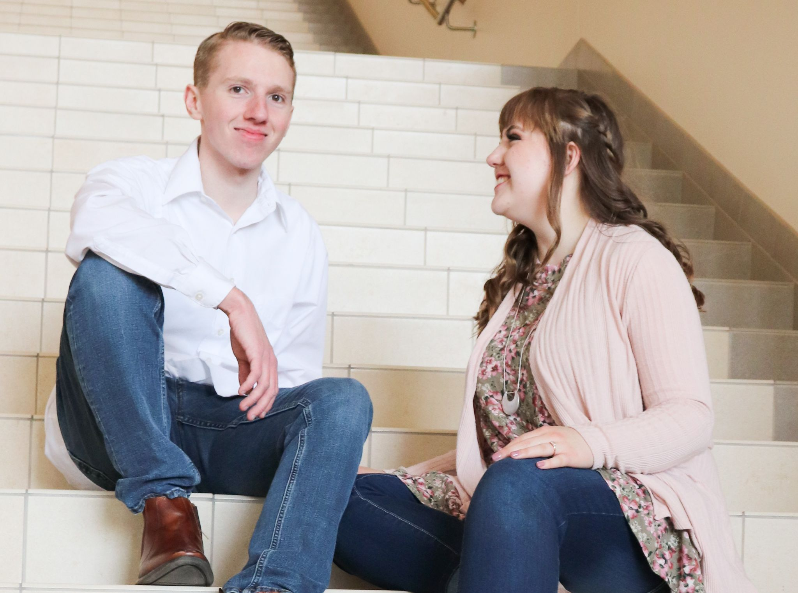

About Me
Darian Bess
I am currently studying Computer Science at Brigham Young University- Idaho and loving it. I had the opportunity to marry my wonderful wife on April 25th, 2020. No kids, yet.
I love learning how to code because it all feels like a big puzzle that feels extremely satisfying when solved. My hobbies include reading, playing card and board games, and doing just about anything else that stretches my brain. I was born and raised in the Church of Jesus Christ of Latter-Day Saints and I am incredibly grateful for the strength that has added to my life.
One of my favorite quotes from an Apostle is from Paul H. Dunn. He states, "To know thyself is to come to know that you and I... are literally the offspring of Diety." We have an influx of superhero movies these days and they demonstrate immense powers. We read about Greek and Roman gods who control elements and creatures. Yet we are literal, spiritual, sons and daughters of a God who's power exceeds all of them infinitely fold. When we have need of it, we have access to that power. I find that incredible.